Big Picture
Lecture 01 introduced linear regression as a model with parameters that must be learned from data. This lecture turns that idea into a concrete training procedure: gradient descent.
The lecture first explains gradient descent in a general way, then applies it to linear regression, and finally extends the discussion from one feature to many features through multivariate notation.
Gradient Descent Intuition
Gradient descent is an iterative optimization algorithm used to minimize a cost function J(θ).
The lecture presents it with a physical intuition: imagine the cost function as a landscape of hills and valleys. You pick a starting point, look around, and move in the direction that takes you downhill most quickly.
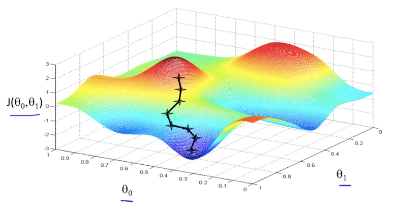
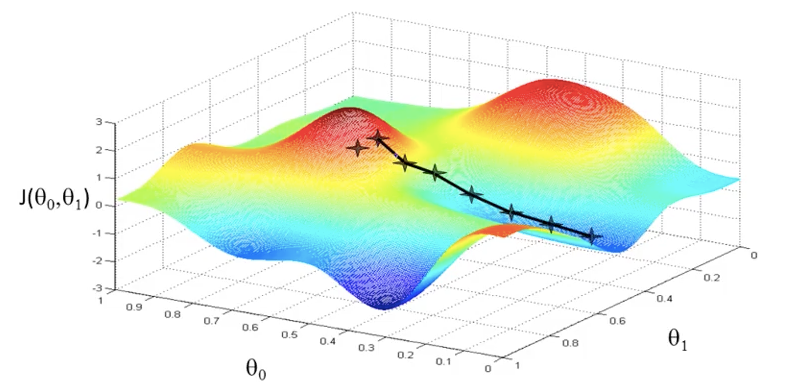
Gradient Descent Update Rule
The generic gradient descent algorithm repeatedly updates every parameter in order to reduce the cost function.
| Term | Meaning |
|---|---|
| The parameter currently being updated | |
| The cost function to minimize | |
| The partial derivative showing the local slope | |
| The learning rate, controlling step size | |
| Apply the rule iteratively until updates become negligible |
The derivative tells you how the cost changes locally, while the learning rate determines how aggressive each update should be.
Simultaneous Updates
One of the most important implementation details is that all parameters must be updated simultaneously at each iteration.
Incorrect approach
Update θ₀ first, then use that already-updated θ₀ while computing θ₁ in the same iteration.
This mixes old and new values and breaks the intended logic of the algorithm.
Correct approach
Compute all new parameter values from the same old parameter state first, then apply them together.
This preserves the true gradient descent step for that iteration.
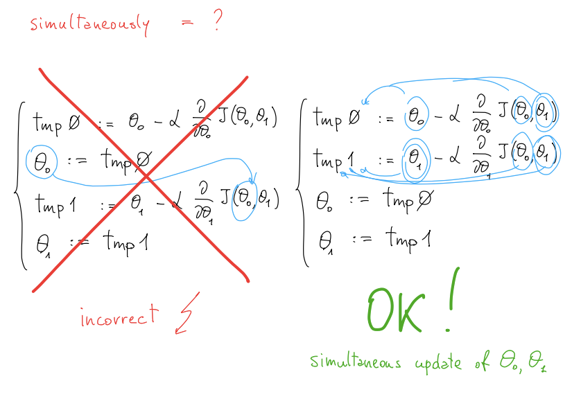
What the Derivative Tells You
The derivative term tells you which direction reduces the cost.
If the derivative is positive, the update subtracts a positive quantity, so the parameter decreases.
If the derivative is negative, subtracting it increases the parameter value.
If the derivative is zero, you are already at a stationary point and the update becomes zero.
So the algorithm does not need an extra rule saying “go left” or “go right.” The sign of the derivative already encodes the direction of motion.
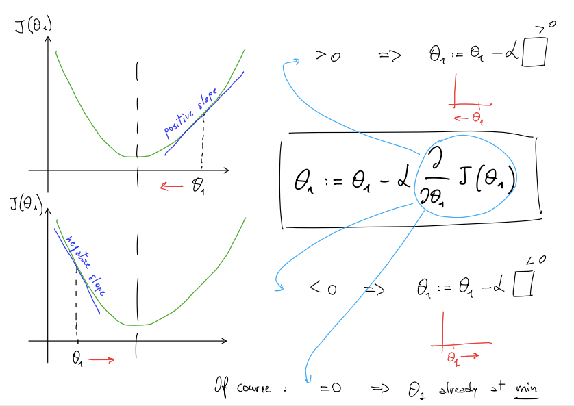
Learning Rate
The learning rate α controls the size of each step in gradient descent.
The algorithm moves in the correct direction, but progress is very slow and may waste computation.
The algorithm reduces the cost steadily and reaches a minimum in a practical number of steps.
The algorithm may jump across the minimum, oscillate, fail to converge, or even diverge.
A useful point from the lecture is that even with a fixed learning rate, gradient descent can still converge, because the derivative naturally gets closer to zero near a minimum.
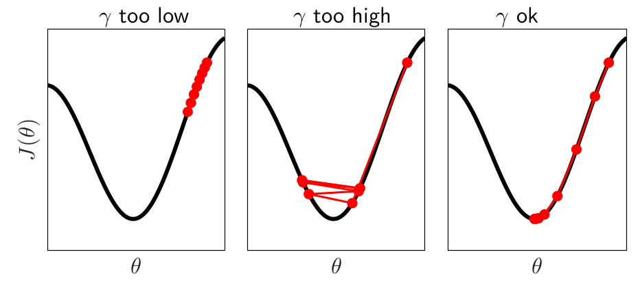
Local vs Global Optima
In general optimization, gradient descent can end at different local minima depending on where it starts. That is a normal property of basic gradient descent.
General case
A complicated cost surface may contain many valleys. Starting from different initial points can lead to different local minima.
Linear regression case
The cost function for linear regression is convex, so there are no bad local minima — only one global optimum.
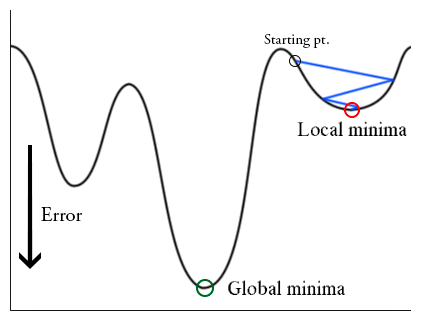
The caveat is that the learning rate still has to be chosen sensibly. Convexity helps, but an excessively large α can still break convergence.
Applying Gradient Descent to Linear Regression
Once the hypothesis and cost function are defined for linear regression, gradient descent becomes concrete: compute the derivatives of the cost function with respect to the parameters and plug them into the generic update rule.
The lecture emphasizes that what changes from one model to another is mainly the derivative term, because that depends on the chosen hypothesis.
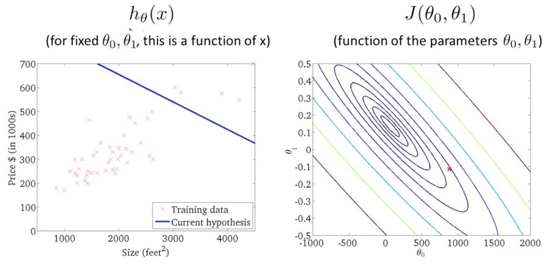
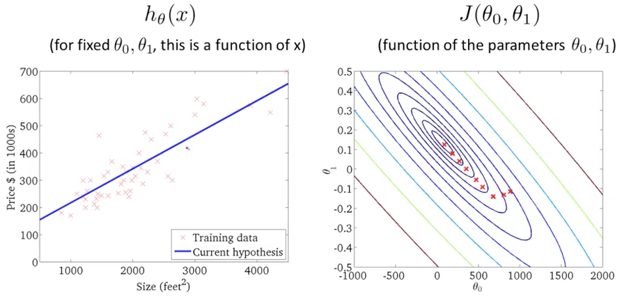
Batch Gradient Descent
The version presented here is called batch gradient descent.
In the update formulas, this appears through sums that run over all training examples from i = 1 to m. Other variants exist, but this lecture introduces the full-batch version first.
From Univariate to Multivariate Linear Regression
Real problems almost never use just one feature. Multivariate linear regression extends the same idea to many inputs.
Univariate
One feature is used to make a prediction.
Multivariate
Multiple features are used together to make a prediction.
Notation
| Symbol | Meaning |
|---|---|
| $$m$$ | Number of training examples (rows) |
| $$n$$ | Number of features |
| $$x^{(i)}$$ | Input features of the i-th training example |
| $$x_j^{(i)}$$ | Value of feature j in example i |
| $$y^{(i)}$$ | Target value of the i-th training example |
This notation becomes necessary because once there are many features, each example is no longer a single number but a full feature vector.
Vectorized Notation
Writing the multivariate hypothesis term by term quickly becomes inconvenient. To simplify notation, the lecture introduces a “zero feature” defined by:
This lets the intercept term θ₀ be absorbed into the same vector structure as the other features.
| Object | Interpretation |
|---|---|
| $$x_0 = 1$$ | Artificial feature added only for notation convenience |
| $$x$$ | Feature vector for one example |
| $$\theta$$ | Parameter vector to learn |
| $$\theta^T x$$ | Compact dot-product form of the linear hypothesis |
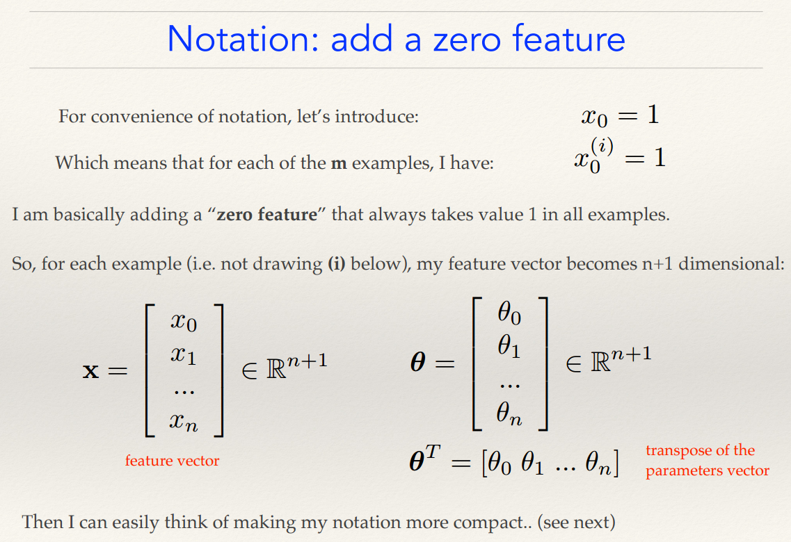
Feature Scaling and Mean Normalization
When features have very different scales, gradient descent can become slow and inefficient. Two common preprocessing techniques help fix this: feature scaling and mean normalization.
Feature Scaling
Feature scaling transforms values so that different features have comparable ranges. For example, one feature might range from 0 to 1, while another ranges from 0 to 1000. This imbalance can distort the optimization process.
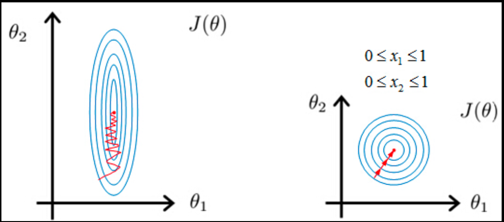
Mean Normalization
Mean normalization shifts features so that they are centered around zero. This helps gradient descent move more symmetrically in all directions.
| Symbol | Meaning |
|---|---|
| $$x_j$$ | Original feature value |
| $$\mu_j$$ | Mean of feature j |
| $$s_j$$ | Scale (range or standard deviation) |
Without Scaling
Features with very different ranges create stretched cost contours, leading to slow and inefficient convergence.
With Scaling + Normalization
Features are more balanced, producing more symmetric contours and faster convergence.
These preprocessing steps do not change the underlying model, but they significantly improve how efficiently gradient descent finds a good solution.
Alternative to Gradient Descent
The lecture briefly mentions that there is also a direct numerical solution for linear regression: the normal equation.
The main trade-off is practical: gradient descent is iterative and needs a learning rate, while the normal equation avoids iteration but becomes computationally expensive when the number of features is large.
| Method | Main Strength | Main Limitation |
|---|---|---|
| Gradient Descent | Scales better to large feature spaces | Needs tuning of α and iterative optimization |
| Normal Equation | Direct analytical solution | Can become slow for large n |
Key Visuals
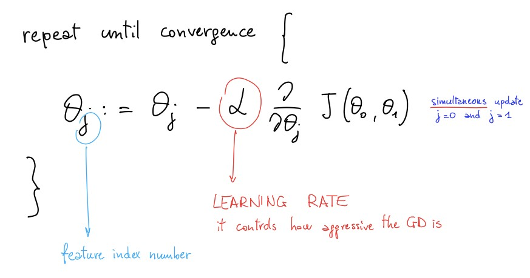
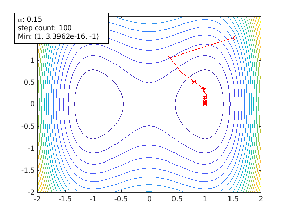
Study Material
Use the slide deck for the full gradient descent walkthrough, optimization visuals, and multivariate notation.
View PDF →Use the transcript for the lecturer’s intuition, implementation warnings, and practical explanation of learning rate behavior.
View PDF →The slides are especially useful here because this lecture relies heavily on visual intuition: surfaces, contours, motion, and parameter updates. The transcript helps explain what those visuals mean.
Quick Review Quiz
1. What is the main goal of gradient descent?
To iteratively update parameters so that the cost function becomes smaller and eventually reaches a minimum.
2. In plain language, what does the derivative term tell you?
It tells you the local slope and therefore which direction will reduce the cost on the next step.
3. Why must parameter updates be simultaneous?
Because every parameter in one iteration must be updated from the same previous state. Mixing old and newly updated values gives an incorrect implementation.
4. What happens if the learning rate is too small?
Gradient descent still moves in the right direction, but convergence becomes very slow.
5. What happens if the learning rate is too large?
The algorithm may overshoot the minimum, oscillate, fail to converge, or diverge.
6. Why can gradient descent converge even with a fixed learning rate?
Because the derivative naturally approaches zero near the minimum, so the updates become smaller automatically.
7. In general optimization, can gradient descent end at different minima?
Yes. Depending on the starting point, basic gradient descent can converge to different local minima.
8. Why is linear regression a special case for gradient descent?
Because its cost function is convex, so there is only one global optimum and no bad local minima.
9. What does “batch” mean in batch gradient descent?
It means that each gradient update is computed using the entire training set.
10. Univariate or multivariate: which kind of regression problem uses more than one feature, and why?
It is multivariate linear regression, because the prediction depends on multiple input features rather than only one.
11. Why do we define x₀ = 1 in vectorized notation?
So the intercept term θ₀ can be included in the same vector expression as the other parameters and features.
12. What is the benefit of writing the hypothesis as hθ(x) = θᵀx?
It gives a compact, scalable notation that works naturally with many features and linear algebra operations.
13. Why is feature scaling useful for gradient descent?
Because it makes features more comparable in scale, which usually leads to a better-shaped optimization landscape and faster convergence.
14. What is one advantage of the normal equation compared with gradient descent?
It provides a direct analytical solution and does not require choosing a learning rate.